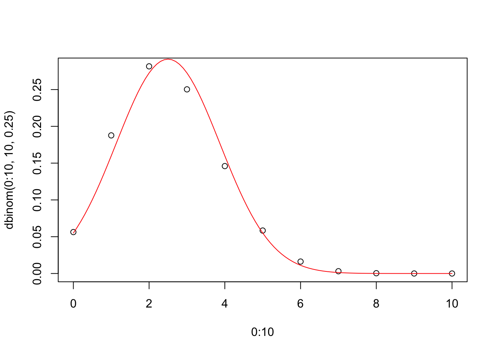

Chapter 4 Probability
4.1 Sampling from a vector
The sample command draws a specified number of entries from a vector. If you want to randomly pick three (numbered) students from a class of ten, you can run sample(1:10, 3).
Sometimes you want to draw with replacement, meaning that each pick ignores what has happened previously; after each draw, you replace your pick before drawing again. For instance, if you want to randomly assign twenty tasks to four employees, you could run sample(1:4, 20, replace=TRUE). If you want employee number 1 to have twice as large of a probability as the other employees of being assigned each task, you’ll need to use the prob parameter: sample(1:4, 20, replace=TRUE, prob=c(2, 1, 1, 1).
4.2 Four basic functions for common distributions
For several families of distributions, the R language has four built-in functions corresponding to:
- Density (pdf for continuous distributions, pmf for discrete distributions)
- Probability less than or equal (cdf)
- Quantile (inverse cdf)
- Random sample
The function names follow the pattern “d,” “p,” “q,” or “r” followed by an abbreviation for the family of distributions. For example, the probability of getting four heads out of ten flips of a coin with heads-probability .25 is calculated by the R command dbinom(4, 10, .25). The probability of four or fewer heads is pbinom(4, 10, .25). Next, qbinom(.95, 10, .25) tells you the smallest number of heads for which there is no more than .05 probability of exceeding. Finally, rbinom(100, 10, .25) simulates one hundred experiments of the twenty coin flips and tells you how many heads it got in each trial.
For Normal distributions, the abbreviation is “norm.” If no additional parameters are specified, it assumes you want mean zero and standard deviation one. Otherwise use the second and third parameters (named “mean” and “sd”).
Binomial distributions are discrete whereas Normal distributions are continuous. The four functions work in both cases.
plot(0:10, dbinom(0:10, 10, .25))
curve(dnorm(x, mean=10*.25, sd=sqrt(10*.25*.75)), from=0, to=10, add=TRUE, col=2)
Another family built in to R is the uniform distributions, abbreviated “unif.” In particular, runif(n) generates n independent draws from the Uniform(0, 1) distribution.
Before asking the R interpreter to perform a random draw, you might want to use the set.seed command with any integer as the input. This sets a “starting point” for the random draw so that the exact same “random” results can be replicated by the code at a later time or by another computer.
## [1] 0.48177740 0.08033515 0.19638870 0.86257029 0.79840328## [1] 0.2655087 0.3721239 0.5728534 0.9082078 0.2016819When you run the above code, my first runif(5) output will differ from yours, but our draws will agree after we’ve both set the seed to 1.
4.3 Simulation
In a room of 100 people, is it likely that you will be able to find a birthday shared by two people? What about three people? Four? Let’s pretend that leap-years don’t exist, that each day of the year is equally likely to be a person’s birthday, and that the people’s birthdays are independent. Now we draw random birthdays accordingly.
## [1] 214 4 108 102 297 96 265 331 347 27 276 105 37 349 152 167 355
## [18] 214 352 279 261 364 185 179 237 304 176 308 188 194 207 88 321 239
## [35] 177 355 168 228 142 3 343 89 207 67 331 31 329 326 265 207 142
## [52] 273 327 296 299 154 65 64 326 272 205 27 312 334 83 230 26 188
## [69] 294 355 126 231 150 127 302 252 118 162 96 49 333 259 209 335 330
## [86] 22 17 361 76 340 71 47 197 100 130 31 280 163 14 256## b
## 3 4 14 17 22 26 27 31 37 47 49 64 65 67 71 76 83 88
## 1 1 1 1 1 1 2 2 1 1 1 1 1 1 1 1 1 1
## 89 96 100 102 105 108 118 126 127 130 142 150 152 154 162 163 167 168
## 1 2 1 1 1 1 1 1 1 1 2 1 1 1 1 1 1 1
## 176 177 179 185 188 194 197 205 207 209 214 228 230 231 237 239 252 256
## 1 1 1 1 2 1 1 1 3 1 2 1 1 1 1 1 1 1
## 259 261 265 272 273 276 279 280 294 296 297 299 302 304 308 312 321 326
## 1 1 2 1 1 1 1 1 1 1 1 1 1 1 1 1 1 2
## 327 329 330 331 333 334 335 340 343 347 349 352 355 361 364
## 1 1 1 2 1 1 1 1 1 1 1 1 3 1 1## [1] 3The table command scans through a vector and counts the number of occurrences of each value. The max tells us that there is at least one birthday shared by three people but no birthdays are shared by four or more.
But this is a single run of the experiment. To get a better idea of the range of possible outcomes and how probable they are, we want to run the experiment a large number of times.
nsim <- 10000
results <- rep(NA, nsim)
for(i in 1:nsim) {
b <- sample(1:365, n, replace=TRUE)
results[i] <- max(table(b))
}
table(results)/nsim## results
## 2 3 4 5 6
## 0.3598 0.5786 0.0586 0.0029 0.0001Exercise: The following simulation code runs fine, but it doesn’t perform a valid simulation. Identify the TWO flaws and fix them.
n <- 100
nsim <- 10000
results <- rep(NA, nsim)
for(i in 1:nsim) {
set.seed(3)
results <- max(rnorm(n))
}Run your fixed version of the simulation and plot a truehist of the results.